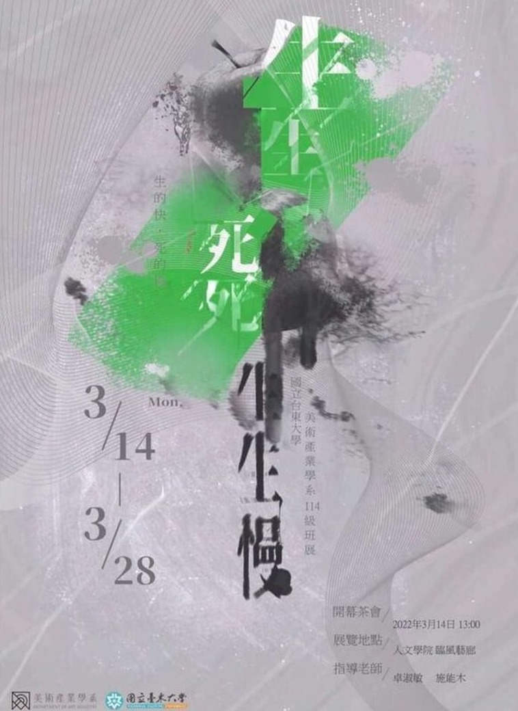
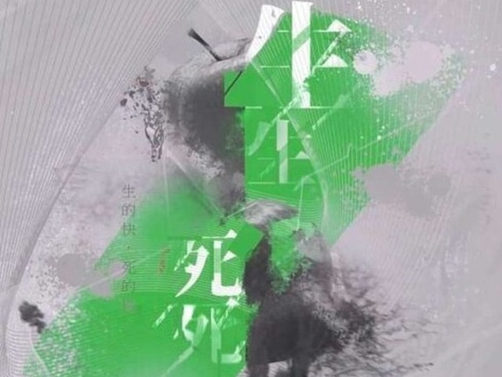
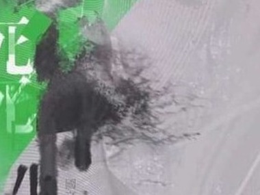

生生死死，生生慢

EXHIBITION KEY VISUAL國立台東大學美產系 114 級班展主視覺——以蘋果象徵生命，提醒珍惜當下。
概念CONCEPT
以蘋果象徵生命，用流動紋理、墨跡與朦朧空間感呈現生命的脆弱；綠色色塊象徵生命力與希望，提醒珍惜當下。


設計規格SPEC
- 項目性質
- 海報設計 · 班展主視覺
- 字體
- Noto Serif TC
- 元素
- 流動紋理・墨跡暈染・朦朧空間感
- 展覽日期
- 2022.03（3/14 開幕）
白#E1E5E3
灰#B4AFB6
黑#353239
綠#68B874
展覽紀錄RECORD
臺東大學美術產業學系 114 級班展「生生死死，生生慢」於 2022 年 3 月 14 日舉辦開幕茶會，收錄在臺東大學的校園活動紀錄中。